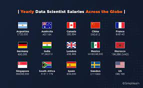

In this project, I used Python to gather three different datasets , using API , JSON and reading csv methods.
Assessed the data for tidyness issues as well as Messy(Content) issues of the data.
This was done in Jupyter Notebook

SQLA data cleaning project which focused on structural issues and data qaulity issues. I made use of various methods and sql function to clean the data
A Data Visualization depicting the global sales of Games by Genre,Platform,and sales
This is a website I designed in my final year , A replcica of car sales website. I used Javascript , CSS AND HTMl

Full data analysis (Data Gathering from Github ,Analyzing and Visualization(Including slide in html) done through Jupyter Notebook